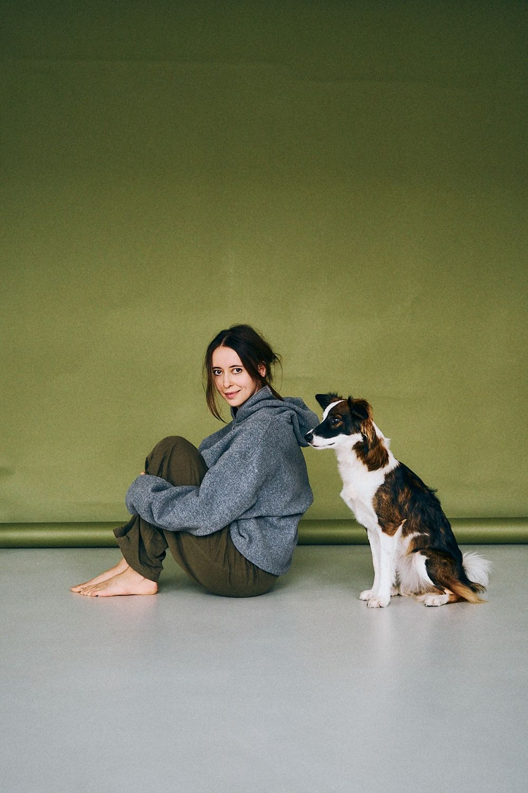

Привіт! Я Саша — дизайнерка, арт-директорка та дослідниця. Це мій цифровий сад з живими нотатками з Obsidian про цікавість, освіту, подив та дизайн.
Кожна точка — нотатка. Наведи, щоб прочитати, натисни, щоб відкрити.Торкнись точки, щоб прочитати. Два пальці — масштаб.
Усі нотатки, теги й посилання між ними. Колір — тема, розмір — довжина нотатки. Тягни точки, гортай і масштабуй мапу, програй, як ріс сад.Торкнись точки, щоб прочитати, або тегу, щоб відфільтрувати сад. Тягни мапу пальцем, масштабуй двома пальцями чи кнопками − і +. Кнопка ▶ покаже, як ріс сад.
Живі нотатки з мого Obsidian-сховища: від перших ескізів до завершених текстів. Обери тему або просто блукай.
Тексти, які вже дозріли до читання від початку до кінця. Зараз це розділ Blog Notes.
Що змінювалося в саду: нові нотатки й правки, день за днем.